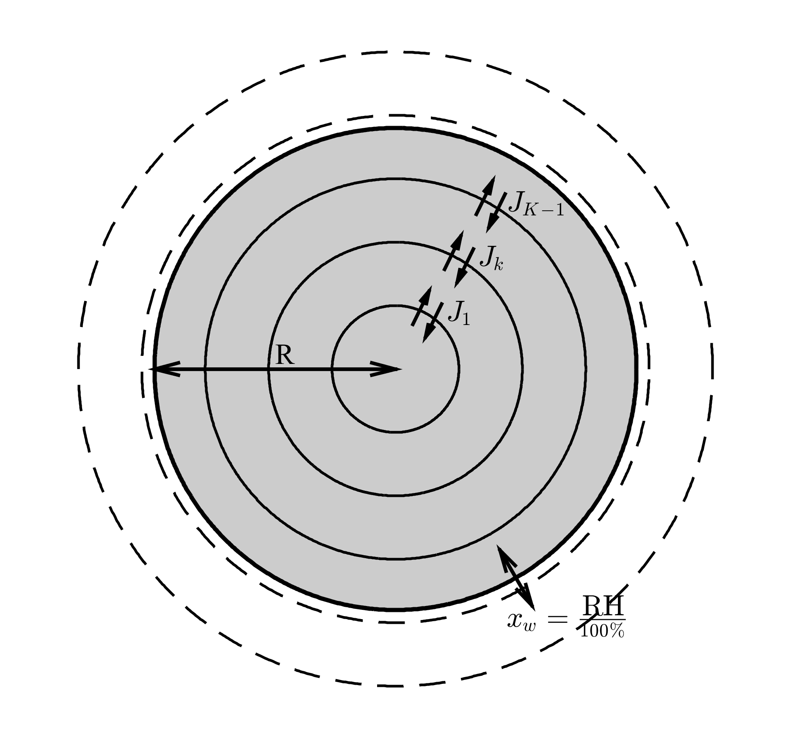

This is the first time the Maxwell-Stefan framework has been applied to an atmospheric aerosol core-shell model and shows that there is a complex interplay between the viscous and solubility effects on aerosol composition. Understanding aerosol composition is essential to accurately model their interactions within atmospheric systems. We use simple binary systems to demonstrate how viscosity and solubility both play a role in affecting the rate of diffusion through aerosol particles.
Aerosols are a complex mixture of solid and liquid particles suspended in a gas, with sizes that can vary by many orders of magnitude. Aerosol particles are essential in the formation of clouds, which in turn play a vital role in the hydrological cycle and energy balance of the Earth system. These tiny particles can originate from natural or anthropogenic sources and the representation of aerosol-cloud interactions provides the greatest uncertainty in climate and cloud models.
Aerosol particles act as surfaces in the atmosphere for water to condense to, in a similar way to dew condenses to surfaces on cool mornings. The condensation of water vapour to the tiny aerosol particles is the initiation of cloud droplet formation. When modelling the condenstation of water vapour to aerosol particles we are particually concerned with their surface properties. Aerosol particles come in many forms, from desert dust particles, sea salt and biological matter, through to black carbon and secondary organic liquid particles. In this research we focus on the surface properties of secondary organic aerosols, which are formed when volatile components, formed within the atmosphere, condense. The surface properties are directly influenced by the mixing of components through the bulk of the aersosol particle.
Research has shown that aerosol composition can be affected through both viscosity and solubility. Ultra viscous aerosol particles have been found to exsist under atmospheric conditions and research suggests that water diffuses slowly through the bulk of these particles affecting the rate at which these particles grow and the composition of the aersosol surface. The non-ideal or solubility effects of mixing have been linked to the partitioning between different phases within individual particles, which means seperations form between different components within the individual particles. Studies have developed models that simulate the mixing within these individual particles. These models solve diffusion equations on the aerosol shells edges, finding the diffusion flux passing through the individual particle.

Studies have used a Fickian description of diffusion to model aerosol composition, which relies on a gradient in composition to drive diffusion. However, a model developed by Dr. Paul Connolly at The University of Manchester, uses the Maxwell-Stefan description of diffusion, where a gradient in chemical potential is used to drive diffusion. In our study we compare equilibration times within individual particles and the dependence of these times on size, viscosity and solubility.
Our main findings suggest that at low relative humidities the viscosity of a secondary organic aerosol is the dominant factor affecting the rate of mixing, however at higher relative humidities, water has a plasticising effect and it's the non-ideal effects of diffusion that dominates mixing within individual particles.
What does this mean for cloud formation? This is what I am starting to investigate with the next part of my project by developing a cloud micorphysics model that includes diffusion effects. So watch this space.
This blog is based on a journal article, recently published in Atmospheric Chemistry and Physics Discussion "Maxwell-Stefan diffusion: a framework for predicting condensed phase diffusion and phase separation in atmospheric aerosol".